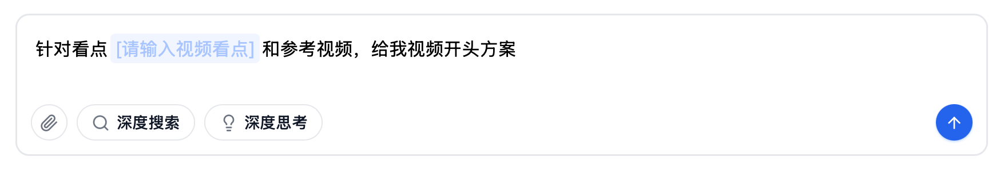
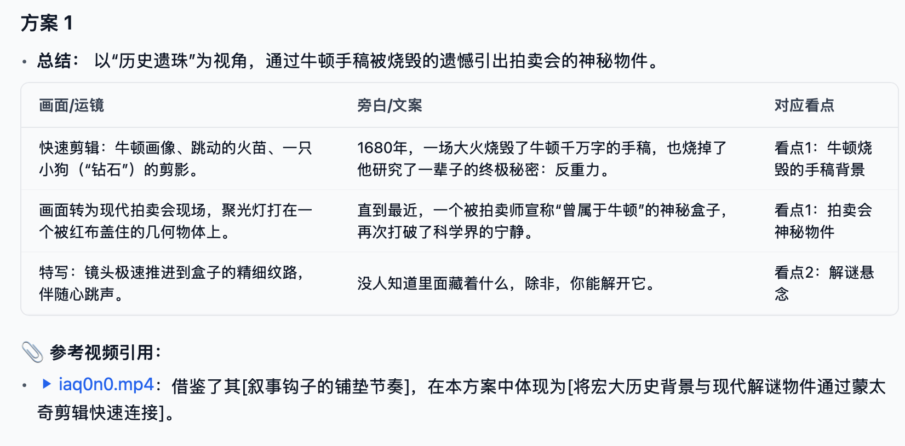
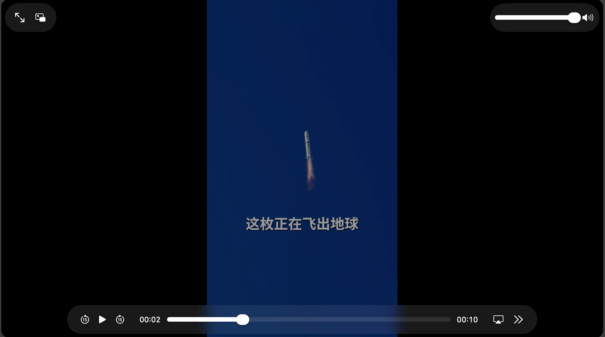
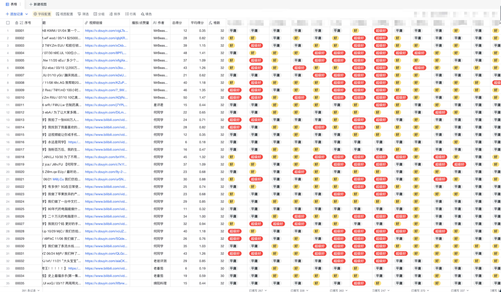

王楚杰
账号案例
系列案例
内容能力
AI 能力
←
返回主页
开头方案生成工具
基于视频看点，结合爆款对标，生成开头方案
📝 输入

仅需一句话描述视频看点
→
智能生成
智能输出
详细脚本 + 参考对标视频
📝 详细脚本

🎬 参考对标视频

→
实际应用
🎯 实战结果
您的浏览器不支持视频播放。
📊 数据表现
开头完播与跳出数据位居历史 Top 5
查看完整视频
→
内部运作机理
🔍
视频看点解析
提取核心看点信息
处理时间
< 1秒
🎯
匹配"看点"适合的"爆款开头类型"
基于看点信息，寻找合适开头类型
类型体系
8种
📚
对标检索与分析
从千万爆款中检索匹配对标
案例总量
200+
⚡
开头方案生成
简述+方案+对标，三维呈现
方案数量
10+
千万爆款视频案例库
工具的知识基础与创意源泉

200+
千万爆款视频案例
8
开头类型体系
100%
高级编导人工标注